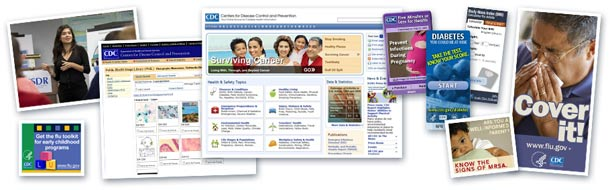
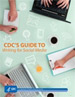

Tools & Templates
 ShareCompartir
ShareCompartir
There are many tools you can use to develop your health communication and social marketing campaigns and programs, and many templates and shortcuts that can save you time and make your campaigns and outreach more successful. The links below will help you discover the best and most effective tools and templates for your health communication and social marketing campaigns.
Online Images
Public Health Image Library (PHIL) – (CDC) – Photographs, Illustrations, Multimedia Files.
Entertainment Education
Television shows, movies, and music not only command the attention of their audiences, but also reinforce existing behavior, demonstrate new behavior, and affect audience emotions. Learn how the CDC partners with Hollywood executives and academic, public health, and advocacy organizations to share information with writers and producers about the nation's pressing health issues.
Entertainment Education: Overview and Resources – General Overview of CDC Entertainment Education Program.
Tips Sheets for Entertainment Education Content Developers – CDC Tip Sheets for Entertainment Education Content Developers.
Health Marketing
What Is Health Marketing? – Health Marketing is a multidisciplinary area of public health practice.
Health Marketing Basics – Health marketing and communication is an emerging field that draws from traditional marketing theories and principles.
CDC's eHealth Interactive Media Activities
eHealth Data Briefs – Information about CDC eHealth data briefs with recent data highlights and current demographic breakdowns for several eHealth channels.
Buttons and Badges – Information about CDC creation of buttons and badges to promote action and awareness for a number of health topics, campaigns, and health observances.
Interactive Health Marketing Websites: eGames
Body and Mind (BAM!) – Online Health information for children.
The Cool Spot – Information on alcohol and resisting peer pressure for teens.
Powerful Bones, Powerful Girls – Bone health campaign for girls.
Design templates for local health offices
These products are a great starting point for small local health offices to build professional look for communication materials. A theme can be built by simply adding your logo, fonts, and colors. They can be used across multiple communication channels, including print and web. Each template can be further customized to coordinate with other products in this set. Templates are provided in both Adobe InDesign® and Microsoft Office® software.
Social Media Tools
CDC Social Media Tools – Information about CDC Social Media Tools.
 Social Media Toolkit [2.5 MB, 59 pages] – The Social Media Toolkit has been designed to provide guidance and to the share lessons learned in more than three years of integrating social media into CDC health communication campaigns, activities, and emergency response efforts. In this guide, you will find information to help you get started using social media—from developing governance to determining which channels best meet your communication objectives to creating a social media strategy. You will also learn about popular channels you can incorporate into your plan – like blogs, video-sharing sites, mobile applications, and RSS feeds. (Revised July 2011)
Social Media Toolkit [2.5 MB, 59 pages] – The Social Media Toolkit has been designed to provide guidance and to the share lessons learned in more than three years of integrating social media into CDC health communication campaigns, activities, and emergency response efforts. In this guide, you will find information to help you get started using social media—from developing governance to determining which channels best meet your communication objectives to creating a social media strategy. You will also learn about popular channels you can incorporate into your plan – like blogs, video-sharing sites, mobile applications, and RSS feeds. (Revised July 2011)
CDC’s Guide to Writing for Social Media [1.6 MB, 60 pages]– CDC’s Guide to Writing for Social Media was written to provide guidance and share the lessons learned in more than three years of creating social media messages in CDC health communication campaigns, activities, and emergency response efforts. In this guide, you will find information to help you write more effectively using multiple social media channels, particularly Facebook, Twitter, and mobile phone text messaging. The guide is intended for a beginner audience, although some readers with an intermediate level may find it useful too.
CDC Social Media Tools Guidelines & Best Practices – Information about CDC Social Media Tools Guidelines and Best Practices.
Federal Examples of Health Marketing and Communication
The Administration on Aging (AoA) – Promotes healthy lifestyles for elders.
The Administration for Children and Families (ACF) – Provides parents with information and resources for choosing an adequate child care facility.
The Agency for Healthcare Research and Quality (AHRQ) provides guides on good health: for adults; for children.
The Centers for Medicare and Medicaid Services (CMS) – Provides information for members on preventive services.
The Food and Drug Administration (FDA) – Provides information for consumers on how to use medicine safely.
The Health Resources and Services Administration’s (HRSA) – Promotes the end of adolescent bullying.
The Indian Health Service (HIS) – Provides health, safety and cultural information for children.
The National Institutes of Health’s (NIH) National Cancer Institute (NCI) – Provides specific information for coping with cancer for both patients and health professionals.
The United States Agency for International Development (USAID) – Presents a variety of stories of health promotion and education around the world.
Tools & Templates
CDCynergy – An innovative and interactive CD-ROM-based tool that provides practical, step-by-step assistance to public health professionals.
- Page last reviewed: January 21, 2016
- Page last updated: January 21, 2016
- Content source:
- Centers for Disease Control and Prevention
- Page maintained by: Division of Public Affairs (DPA), Office of the Associate Director for Communication (OADC)